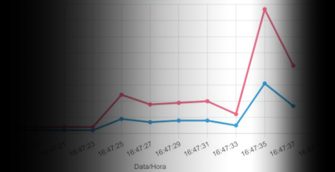
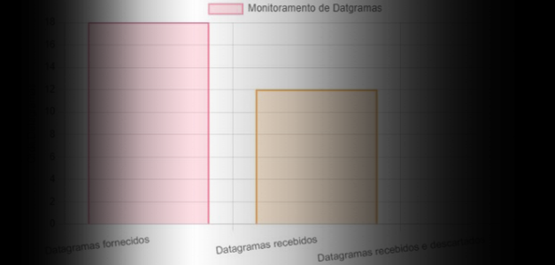
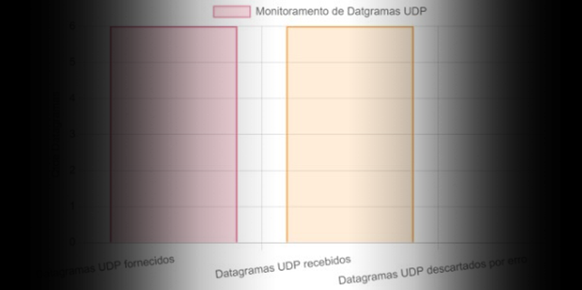
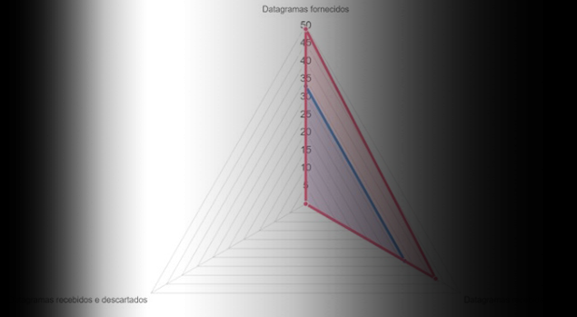

Home
Segmentos TCP
Datagramas Gerais
Datagramas UDP
Datagrama Geral x UDP
Na aplicação LM, você poderá monitorar diversas propriedades do protocolo SNMP!
Confira todas nossas funções abaixo:
Monitore a quantidade de segmentos TCPs recebidos e enviados em tempo real a partir do IP desejado!
Começar


Acompanhe, também, o monitoramento dos diagramas gerais fornecidos, recebidos e descartados!
Começar
Faça o monitoramento dos diagramas UDP fornecidos, recebidos e descartados por erro!
Começar


Veja graficamente uma comparação dos dados de datagramas gerais x UDP fornecidos, recebidos e descartados através do sensor 4!
Começar